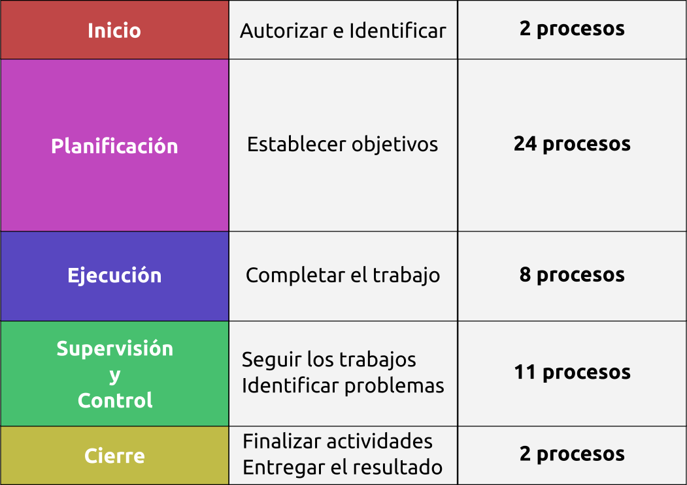
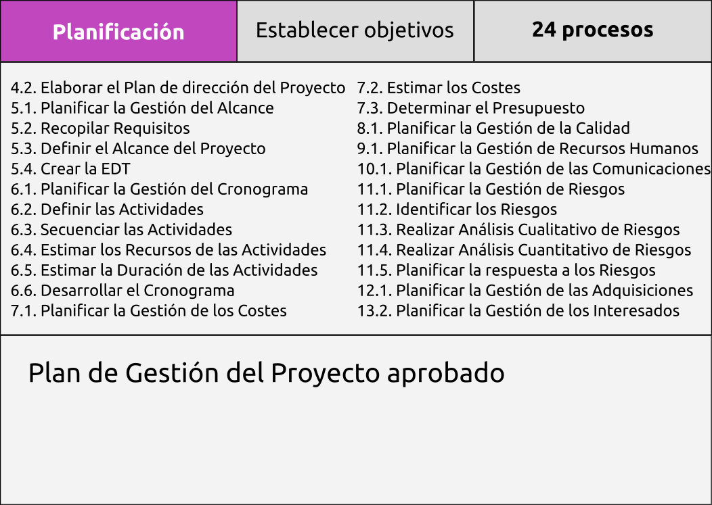
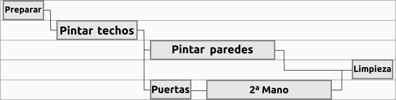

Curso de Gestión de Proyectos para ONG
Introducción:
- ¿Quién eres?
- ¿A qué te dedicas?
- ¿Cuál es el último proyecto en el que has estado implicado y cuál fue tu papel en él?
Expectativas...
Necesidades de Gestión de Proyectos en ONG:
- Importancia del éxito en los proyectos de desarrollo
- Alta influencia de factores externos
- Gestionar el cambio y las presuposiciones
- Gestionar expectativas volátiles
- Patrones de financiación cambiantes
- Desarrollo frente a Caridad
- Limitaciones presupuestarias
- Liderazgo de Voluntarios
¿Es el Control y Evaluación diferente de la Gestión de Proyectos?
Empecemos con unas definiciones:
- Proyecto
- Gestión de proyectos
- Programa
- Portafolio
Proyecto
Un esfuerzo temporal para crear un producto único, un servicio o un resultado.
Tiene un principio y un final
Es único
Consume recursos
Gestión de proyectos
Aplicación de conocimientos, habilidades, herramientas y técnicas a las actividades del proyecto para alcanzar los requisitos establecidos.
... se consigue a través de 5 grupos de procesos: Inicio, Planificación, Ejecución, Supervisión y Control y Cierre
Programa
Un grupo de proyectos relacionados y gestionados de manera coordinada para obtener un beneficio y un control que no se podría obtener gestionándolos de manera individual.
Portafolio
Grupo de proyectos y/o programas y de otros trabajos que se agrupan para facilitar su efectiva gestión de cara a conseguir unos objetivos estratégicos.
Relación entre Proyecto, Programa y Portafolio:
El Gestor de Proyectos:
No es miembro del Consejo de Gobierno o Junta de Proyecto
Responsable:
- ante la Junta del Proyecto...
- de la compleción del proyecto...
- de acuerdo al plan establecido
Realiza las actividades:
- Planificar
- Organizar recursos y repartir tareas
- Medir e informar del progreso
Interesados del Proyecto
Aquellas personas que o bien están afectadas por los resultados del proyecto o bien pueden afectar a los resultados del proyecto.
ONG, Equipo del proyecto, Beneficiarios del proyecto, Industria, Comunidad, Empleados, Financiadores públicos, Patrocinadores, Voluntarios, Gobierno, Grupos de interés, etc.
Interesados del Proyecto

Caso de estudio
Elaborar un caso de estudio con identificación de interesados
Introducción a los grupos de procesos:
El Ciclo de Vida de todos los Proyectos pasa por cinco Grupos de Procesos: Inicio, Planificación, Ejecución, Supervisión y Control y Cierre
Estos Procesos están agrupados por Áreas de conocimiento: Integración, Alcance, Tiempo, Coste, Calidad, Recursos Humanos, Comunicaciones, Riesgos, Adquisiciones, Interesados
En total hay 47 Procesos repartidos entre los Grupos de procesos y Áreas de conocimiento.
Los cinco grupos de Procesos son:
Grupos de procesos y Áreas de conocimiento
Importancia de los Grupos de Procesos
Debemos entender cuáles son los cinco Grupos de Procesos por los que pasan TODOS los proyectos
(lo único que varía entre proyectos es cuanto tiempo pasa en cada Grupo...)
¿Por qué pasar por TODOS los grupos de procesos?
 Imagen obtenida de OpenClipArt
Imagen obtenida de OpenClipArt
Grupo de Procesos de Inicio
4.1. Desarrollar el Acta de Constitución:
- Formalmente autoriza a un proyecto o a una fase de proyecto
- El desarrollo del Acta de Constitución es parte del Área de Conocimiento de Integración
- El Gestor de Proyectos debe ser identificado y asignado tan pronto como el Proyecto sea viable - Preferentemente mientras el Acta aún está en desarrollo
- Los Proyectos pueden ser Constituidos y Autorizados externamente a la organización p.e.: agencias del gobierno, requerimientos legales, desarrollos tecnológicos, necesidades de negocio...
Contenidos del Acta de Constitución:
- Propósito
- Actores principales
- Requisitos básicos y Objetivos
- Restricciones y Supuestos
- Riesgos
- Estructura de Desglose del Trabajo de Alto Nivel
- Estimaciones de Coste
- ...
Autorización por escrito
13.1. Identificar a los Interesados:
- Crear un registro de personas y grupos con capacidad de impacto o afectados por el proyecto
- La identificación de los Interesados es parte del Área de Conocimiento de Gestión de los Interesados
- Los Interesados del Proyecto son aquellos que están involucrados activamente en el mismo y aquellos a cuales sus intereses se van a ver afectados por los resultados, ejecución y compleción del mismo
13.1. Identificar a los Interesados:
- El Gestor de Proyectos debe administrar la influencia de los mismos con respecto a los requisitos para asegurar el éxito del proyecto
- Los Interesados pueden tener una influencia positiva o negativa en el Proyecto
- Los Interesados con influencia negativa suelen ser subestimados por el equipo del proyecto por lo que aumenta el riesgo de que el Proyecto no acabe con éxito
Grupo de Procesos de Planificación
Definición
La Planificación en el contexto de la Gestión de Proyectos implica la documentación de acciones necesarias para definir, preparar, integrar y coordinar todos los planes subsidiarios en un Plan de Gestión de Proyecto
Se pueden tener que elaborar hasta 14 planes subsidiarios
Gestión de la Integración del Proyecto
- Desarrollar el Plan de Gestión del Proyecto[4.2.]
- Documento detallado y bien estructurado que define el estilo del Proyecto en sí mismo
- Asegura la Integración a lo largo del proyecto
- Controla el cambio de manera efectiva
- Puede actualizarse en actividades de planificación iterativas
Gestión del Alcance del Proyecto:
- Durante la planificación, el Alcance se define y describe de manera minuciosa ya que se tiene más información sobre el propio Proyecto
- Planificar la Gestión del Alcance [5.1.]
- Recolección de Requisitos [5.2.]
- Definición del Alcance [5.3.]
- Creación de la Estructura de Desglose del Trabajo (EDT) [5.4.]
EDT:
- Identificar los Entregables y el trabajo relacionado
- Estructuración y organización de la EDT
- Descomposición de los niveles superiores en componentes de menor nivel
- Verificar que el grado de descomposición es necesario y suficiente (Los componentes del Proyecto pueden ser productos o servicios)
Resultados de la planificación del Alcance
- Plan de gestión del alcance
- Plan de gestión de requisitos
- Documentación de requisitos
- Línea Base del Alcance
- Enunciado del Alcance
- EDT
- Diccionario de la EDT
Gestión del Tiempo del Proyecto
- Planificar la Gestión del Tiempo [6.1.]
- Definir las actividades [6.2.]
- Secuenciar las actividades [6.3.]
- Estimar los recursos de las actividades [6.4.]
- Estimar la duración de las actividades [6.5.]
- Desarrollar el Cronograma [6.6.]
Secuenciar las actividades [6.3.]
- De final a principio
- De final a final
- De principio a principio
- De principio a final
Desarrollar el Cronograma [6.6.]
Actividades divergentes: única predecesora con múltiples sucesoras
Actividades convergentes: múltiples predecesoras con una única sucesora
Conceptos claves de gestión de Cronogramas:
- Crashing
- Fast tracking
- Nivelación de recursos
- Plazo de ejecución
- Adelantos y retrasos
- Soluciones provisionales
Resultados de la planificación del Tiempo
- Plan de gestión del cronograma
- Línea Base del tiempo
- Datos del cronograma
Gestión del Coste del Proyecto
- Planificar la Gestión de Costes [7.1.]
- Estimar Costes [7.2.]
- Variables
- Fijos
- Directos
- Indirectos
- Determinar el presupuesto [7.3.]
Herramientas de Coste y Presupuesto:
- Estimación análoga (Top-Down)
- Estimación paramétrica
- Estimación ascendente (Bottom-Up)
- Estimación por tres puntos
- Análisis de reservas
- Coste de la calidad
Esquema del presupuesto
Ingeniería del Valor
La Ingeniería del Valor es una aproximación sistémica a encontrar la forma menos costosa de completar el mismo trabajo
Los Gestores de Proyectos la practican constantemente: eligen el mejor recurso para completar el trabajo, de la manera más rápida y con la mejor calidad y manteniendo el coste total del Proyecto bajo control
Resultados de la Planificación de Costes
- Plan de gestión del coste
- Línea Base del coste
- Requisitos de financiación del Proyecto
Gestión de la Calidad del Proyecto
- Planificar la Gestión de la calidad Calidad [8.1.]:
- Usando Análisis de Coste / Beneficio (evitando el «chapado en oro» que puede disparar los costes sin reportar beneficios al cliente)
- Aplicando prácticas de Marcas de Referencia (comparando proyectos entre si).
El Grado y la Calidad no son lo mismo
- La baja Calidad es un problema pero el bajo Grado no tiene porqué
- La Calidad es completar un Requisito
- Pueden haber distintos grados de Calidad
Resultados de la Planificación de Calidad
- Plan de gestión de la calidad
- Plan de mejora de procesos
- Métricas de calidad
- Listas de chequeo de la calidad
Gestión de Recursos Humanos del Proyecto
- Planificar la Gestión de Recursos Humanos [9.1.]:
- Identificar perfiles, roles, responsabilidades, competencias, etc
- Identificar las restricciones del Proyecto:
- Estructura de la organización
- Acuerdos de negociación colectiva
- Contratación de personal
- Normativa vigente
- Identificar necesidades de formación, recompensas, etc
Resultados de la planificación de Recursos Humanos
- Plan de gestión de recurso humanos
- Roles y Responsabilidades
- Organigramas del Proyecto
- Plan de gestión del personal
- Matrices RACI
- Matriz de Asignación de Responsabilidades
Gestión de las Comunicaciones del Proyecto
- Planificar la Gestión de las Comunicaciones [10.1.]
- Hay que entender qué debe ser comunicado, a quién y con qué frecuencia
- El Gestor de Proyectos debe gastar gran parte de su tiempo comunicándose
El Plan de Comunicación depende de:
- Requisitos de información de los interesados
- Listado de emisores / listado de receptores
- Tecnologías de comunicación
- Modelo de comunicación
- Emisor / Receptor / Mensaje / Ruido
- Pautas de comunicación
- Método de comunicación
- Push / Pull / Interactivo
Resultados de la planificación de las Comunicaciones
- Plan de gestión de las comunicaciones
- Requisitos de información
- Paquetes de información y frecuencia
- Recursos, métodos y canales
- Diagramas de flujo de información
- Matriz de distribución de información
- Restricciones de comunicación
Gestión de los Riesgos
- Planificar la gestión de Riesgos [11.1.]
- Identificar los Riesgos [11.2.]
- Realizar el Análisis Cualitativo de los Riesgos [11.3.]
- Realizar el Análisis Cuantitativo de los Riesgos [11.4.]
Planificar la gestión de Riesgos [11.1.]
- Se emplean
- Enunciado del alcance
- Planes de Costes / Tiempo y Comunicaciones
- Registro de interesados
- Se genera el Plan de Gestión de Riesgos
- Metodología a emplear y acciones
- Roles y responsabilidades
- Presupuestos y reservas
- Mediciones y tolerancias
Todos los miembros de un Proyecto deberían colaborar en la identificación de Riesgos
Identificar los Riesgos [11.2.]:
El resultado es el Registro de Riesgos
- Herramientas para la identificación de Riesgos:
- Lluvia de ideas
- Técnica Delphi
- Entrevistas
- Análisis DAFO
Registro de Riesgos
- Lista de riesgos identificados
- Causas comunes de riesgos
- Disparadores de riesgos
- Lista de posibles respuestas
Realizar el Análisis Cualitativo de los Riesgos
- Aplicar Probabilidad e Impacto
- Crear la Matriz de Probabilidad e Impacto
- ¡Los Riesgos positivos son Oportunidades!
- El resultado es un Registro de Riesgos actualizado
Grupo de Procesos de Planificación
Gestión de los Riesgos del Proyecto:
Realizar el Análisis Cuantitativo de los Riesgos
El Análisis Cuantitativo se realiza solo en los Riesgos que se hayan priorizado en el Análisis Cuantitativo por potencialmente ser de impacto para el Proyecto
Las herramientas pueden ser:
- Aplicar Análisis de Sensibilidad
- Evaluación del Impacto económico esperado
- Empleo de Árboles de decisión
Grupo de Procesos de Planificación
Gestión de las Adquisiciones del Proyecto
Planificar las Adquisiciones
La decision es si hay que "hacer o comprar"
El proceso de Planificar las Adquisiciones incluye revisar el riesgo inherente a cada decisión de "hacer o comprar" También incluye revisar cada tipo de contrato que piensa usarse en lo que se refiere a mitigar el riesgo o transferirlo al vendedor
La decisión de "hacer o comprar" puede ser tomada a través de cálculos cuantitativos o de juicio de expertos
Grupo de Procesos de Planificación
Mientras revisabamos el Grupo de Procesos de Planificación hemos visto 19 Procesos de las 9 Áreas de Conocimiento
Consejo:
No hay ningún sustituto a la documentación
Siempre hay que documentar
El Grupo de Procesos de Planificación está seguido de:
Grupo de Procesos de Ejecución
Procesos de gestión del Ciclo de Vida del Proyecto: Fases 3 y 4 Requisitos
Fase 3. Ejecución
Plantillas fundamentales
Implementar / Gestionar Sub-Proyectos
Gestionar las Finanzas / Comunicaciones
Plantillas para las Fases 1-2 necesarias
Fase 4. Control
Plantillas fundamentales
Seguimiento del Progreso, Calidad, Tiempo, Coste
4.1 Informes de estado
Gestión de la Corrupción del Alcance / Registro de cambios
4.2 Peticiones de cambio
Resultados
Aprobación de Cambios (si es necesario)
Grupos de Procesos de Ejecución:
El Grupo de Procesos de Ejecución consiste en los Procesos que se realizan para completar el trabajo definido en el Plan de Gestión del Proyecto para satisfacer las especificaciones del Proyecto
Procesos de Gestión de proyectos
Procesos de Inicio
Procesos de Seguimiento y Control
Proceos de Planificación
Procesos de Ejecución
Procesos de Cierre
Antes de la ejecución del Proyecto
- Estructura de Desglose del Trabajo inicial
- Línea Base del Tiempo (Cronograma)
- Línea Base del coste
- Plan de Calidad
- Plan de Recursos Humanos
- Plan de Comunicaciones
- Riesgos identificados
- Plan de gestión de las Adquisiciones
Procesos de Ejecución del Proyecto:
- Realizar el Aseguramiento de la Calidad
- Efectuar las Adquisiciones
- Adquirir el Equipo del Proyecto
- Desarrollar el Equipo del Proyecto
- Dirigir el Equipo del Proyecto
- Distribuir información
- Gestionar las Expectativas de los Interesados
- Dirigir y Gestionar los Trabajos del Proyecto
Gestión de Recursos Humanos
Entradas de la etapa de planificación:
Roles y responsabilidades:
- Organigramas
- Plan de gestión del personal
- Contratación del personal, finalización de contratos, calendarios laborales, recompensas, reconocimientos, seguridad y cumplimiento
- Políticas de estandares, procesos de la organización
- Información de disponibilidad de recursos, niveles de competencia, experiencia intereses
Recursos Humanos - Adquiriendo el equipo
Recursos pre-asignados
** Experiencia, relaciones previas con el proyecto
Negociación
** Con otros grupos, con unidades funcionales, con organizaciones externas
Adquisición
** Contratación, temporalidad
Equipos virtuales
** Localizaciones lejanas, equipo de trabajo local, consultores ** Apoyado en tecnología ** La planificación de las comunicaciones es muy importante ** Protocolos
Recursos Humanos - Adquiriendo el equipo
Los equipos pueden no resultar como se planifican:
- Afectan los Riesgos, el Cronograma, el Coste, las Comunicaciones, todo se debe tener en cuenta
- Además también hay que tener en cuenta otras opciones: legales, regulaciones, obligaciones que deben vigilarse
Recursos Humanos - Desarrollando el equipo
Objetivos del Desarrollo del Equipo:
- Aumentar el conocimiento y los niveles de habilidad, lo cual tiene un impacto directo en lo Entregables, el Cronograma, los Costes y la Calidad
- Mejorar el trabajo en equipo, el sentimiento de confianza y entendimiento, aumenta la moral y reduce conflictos
- Crear una cultura de equipo dinámica y cohesiva, lo que mejora al productividad individual y de equipo
Recursos Humanos - Desarrollando el equipo
La escalera de Tuckman Ladder - Etapas en el desarrollo del equipo
- Formación
- Conflicto
- Generación de normas
- Rendimiento
- Cese
Recursos Humanos - Desarrollando el equipo
Puntos importantes en el Desarrollo del Equipo:
- Habilidades interpersonales
- Formación
- Reglas del juego
- Co-localización
- Recompensas y reconocimientos
Recursos Humanos - Gestionando al equipo
Observación y Conversación
Evaluaciones de rendimiento
Resolución de conflictos
Habilidades interpersonales
Recursos Humanos - Gestionando al equipo
Resolución de conflictos:
- Retirar / Eludir
- Suavizar / Acomodar
- Comprometer
- Forzar
- Colaborar
- Confrontar / Resolución de problemas
Recursos Humanos - Gestionando al equipo
Estilos de liderazgo
Autocrático [Director]
- El Gestor solicita poca o ninguna información al Equipo
- El Gestor toma las decisiones a solas
Consultor autócrata [Persuasor]
- El Gestor solicitia información del Equipo de forma intensiva
- El Gestor toma la decisión a solas
Gestor Consensuador [Participativo]
- Los problemas se proponen en equipo para discutir de manera abierta y recopilar información
- El Equipo toma la decisión
Gestor de accionistas [Delegador]
- Se comparte poca información en el grupo
- El Equipo tiene la autoridad final para tomar la decisión
El Gestor de Proyecto debe implicar a los Interesados El o Ella debe trabajar con el Equipo del Proyecto para que desarrollen sus habilidades y completen el trabajo, de manera precisa, en tiempo y haciendo crecer al equipo en el proceso
Grupo de Procesos de Planificación
Gestión de Recursos Humanos del Proyecto
¡Cuidado con el efecto Halo!
Se produce cuando la calidad de una persona influencia una decisión
Por ejemplo: El señor A es una persona con grandes capacidades tecnológicas, por lo que será un buen gestor de proyectos tecnológicos Solo con estos datos no podríamos afirmar que las habilidades tecnológicas del señor A le vayan a convertir automáticamente en un buen Gestor de Proyectos
¡No hay que dejarse cegar por el Halo!
Gestión de las Comunicaciones del Proyecto
Entradas de la etapa de planificación e inicio:
- Registro de interesados
- Estratégia de gestión de Intersados
- Requisitos de comunicación
- Información, formato, lenguaje, frecuencia, nivel de detalle
- Los miembros del Equipo son responsables de distribuir la información
- Tecnología
- Proceso de escala
- Reuniones de equipo, cronogramas de reunión de equipo
Comunicación Distribuir información
Activos de información que se generan
- Notificaciones a Interesados
- Informes de proyecto
- Registros de proyecto
- Retroalimentación
- Lecciones aprendidas
Comunicación - Gestión de expectativas de los interesados
Gestionar de manera activa las expectativas, influenciar los deseos para que se alineen con los objetivos del proyecto
Tratar los puntos que no se conviertan en Incidencias
Clarificar y resolver Incidencias
Gestión de Calidad del Proyecto
Entradas de la etapa de planificación:
- Plan de Gestión de la Calidad
- Plan de mejora de Procesos
- Métricas de Calidad
Entradas de Seguimiento y Control:
- Medidas del Control de la Calidad
Aseguramiento de la Calidad
- Las auditorías de Calidad son revisiones estructuradas con objetivos tales como
- Identificar las mejores prácticas
- Identificar carencias
- Obtener mejores prácticas de proyectos similares conocidos
- Ofrecer ayuda a la mejora
- Asegurarse de que la auditoría contribuye constructivamente
Gestión de las Adquisiciones del Proyecto
Entradas de la etapa de planificación:
- Documentos de Adquisiciones
- Criterios de selección de proveedores
- Lista cualificada de vendedores
- Acuerdos de compras
Llevar a cabo las adquisiciones
- Hacer las solicitudes de información a los vendedores cualificados
- Evaluar las resupuestas
- Referirse a las estimaciones de expertos
- Negociar
- Lista de vendedores preseleccionados
- Concesión del contrato
Dirigir y Gestionar la Ejecución del Proyecto
Gestión de Calidad del Proyecto
- Realizar el Aseguramiento de la Calidad
Gestión de los Recursos Humanos del Proyecto
- Adquirir el Equipo del Proyecto
- Desarrollar el Equipo del Proyecto
- Dirigir el Equipo del Proyecto
Gestión de las comunicaciones del Proyecto
- Distribuir información
- Gestionar las Expectativas de los Interesados
Gestión de las Adquisiciones del Proyecto
- Llevar a cabo las Adquisiciones
Gestión de la Integración del Proyecto
- Dirigir y Gestionar los Trabajos del Proyecto
Conclusión
Este Proceso implica coordinar gente y recursos, así como integrar y llevar a cabo las actividades descritas en el Plan de Gestión del Proyecto
Los resultados pueden requerir realizar nuevas planificaciones y crear nuevas Líneas Base
Gran parte del Presupuesto del Proyecto se emplea en esta fase
Ejercicio
Actividad de creación de espíritu de Equipo
Procesos de gestión del Ciclo de Vida del Proyecto: Fase 5 Requisitos
Fase 5. Cierre
Plantillas fundamentales
Evaluar el Éxito y Cerrar el Proyecto
5.1 Informe de Cierre del Proyecto
Resultados
Aprobación del Informe de Cierre
Proceso de Control y Cierre
Qué
- Revisar y analizar el Rendimiento del Proyecto
- Informar del Rendimiento del Proyecto
Por qué
- Controlar la Triple Restricción
- Informar del Rendimiento del Proyecto
Cómo
Proceso de Control y Cierre
Revisar y analizar el Rendimiento del Proyecto
Informes creados por los Miembros del Equipo al Gestor de Proyecto
- Análisis de Variación
- Estado de Valor Ganado
- Auditoría de Riesgos
Proceso de Control y Cierre
Análisis de la Variación
- Informe de variación del Cronograma
- Informe de varianción del Coste
- Informe de variación de la Calidad
Elementos comunes a los 3 informes
- Resultados planificados
- Resultados reales
- Variación
- Causas Raíz
- Respuestas planificadas
Plantilla para el informe de Analisis de Variación
Proceso de Control y Cierre
Estado del Valor Ganado
Métricas matemáticas
- Valor Planificado
- Valor Ganado
- Coste Real
- Desviación del Programa
- Desviación del Coste
- Indice de Rendimiento del Programa
- Indice de Rendimiento del Coste
Plantilla para el informe de Valor Ganado
Proceso de Control y Cierre
Auditoría de Riesgos
- Auditoría de Eventos de riesgo
- Auditoría de Respuesta a Riesgos
- Proceso de Gestión de Riesgos
Plantilla para el informe de Auditoría de Riesgos
Proceso de Control y Cierre
Informe de Rendimiento del Proyecto
El informe se envía al Gestor del Proyecto o al esponsor
- Los datos se obtienen de los informes de estado del Equipo del Proyecto.
- Solo debe aparecer información de alto nivel
El informe contendrá
- Lista de objetivos alcanzados a fecha del informe
- Lista de objetivos planificados y no alcanzados a fecha del informe
- Causa raíz de las variaciones
- Impacto de las variaciones
- Acciones preventivas y correctivas planificadas
Plantilla para el informe de Rendimiento del Proyecto
Interacción delos Grupos de Procesos en el Proyecto
Gestión de Proyetos - Cierre
Por definición los proyectos tiene un inicio definidio y un final definido El proceso de Cierre lleva al Proyecto o la Fase a un final ordenado, de forma operacional y financiera
Los Procesos de Cierre deben activarse cuando
- El Proyecto se completa - en la fase final del proyecto, todos los proyectos deben tener un cierre formal al completarse
- Una Fase del Proyecto se completa - en función del tipo de proyecto algunas Fases deben cerrarse de manera formal o algunas actividades específicas de la Fase pueden darse por terminadas al final de la Fase
- El Proyecto se termina o se cancela
Gestión de Proyetos - Cierre
Los objetivos de Cerrar el Proyecto o la Fase son:
- confirmar la extensión con la que los Entregables se han completado y
- Los Objetivos del Proyecto / Fase se han cumplido
- Se ha obtenido aceptación formal de los Entregables
- Se confirma que los acuerdos de operación y mantenimiento siguen en marcha, de forma apropiada
- Se documenta los elementos extraordinarios y se recomiendan acciones de continuación, de forma apropiada
- Cierre / afianzación de todos los contratos
- Obtener las Lecciones Aprendidas
- Atar los cabos sueltos
- Preparar el Informe Final del Proyecto
- Comunicarse con todos los Inteeresados
Gestión de Proyetos - Cierre
El Cierre de una Fase o Proyecto conlleva:
- Presentar los Entregables e Informes finales
- Cerrar todos los contratos
- Llevar a cabo la revisión del Proyecto y capturar las Lecciones Aprendidas
- Concluir el Proyecto
- Celbrar el éxito
Gestión de Proyetos - Cierre
Entregables e Informes finales
- Verificar los Entregables / Resultados y evaluar el éxito del proyecto frente a los Objetivos del Proyecto
- Documentar los elementos extraordinarios y las acciones de continuación junto con el plan de complección, de forma apropiada
- Obtener la Aceptación / Aprobación del proyecto por parte de los Interesados tal como esté previsto
- Entregar toda la Documentación / Entregables al Cliente / Interesados
- Facilitar y asegurar la transición, el mantenimiento y la operación tal como se requiera
- Documentar las recomendaciones y pasos siguientes, si fuera necesario
- Preparar el Informe Final
Gestión de Proyetos - Cierre
Cierre de Contratos: incluye todas las actividades e interacciones necesarias para asentar y cerrar cualquier contrato que se haya establecido en el proyecto
Esto incluye
- Verificación del producto - Todo el trabajo se ha completado correctamente y de manera satisfactoria
- Financiaciones
- Cierre administrativo - Actualizar los registros de contratos para que reflejen los resultados finales y archivar la información para futuros usos
La finalización prematura de un contrato o proyecto es un caso especial de Cierre de Contratos
Gestión de Proyetos - Cierre
Concluir el Proyecto
- Archivar los documentos del Proyecto, los acuerdo y las aprobaciones, los contratos y las Lecciones Aprendidas
- Llevar a cabo evaluaciones de rendimiento del personal y liberar formalmente al personal para que puedan ser asignados a otros proyectos
- Devolver / Liberar todo el equipamiento que se ha usado en el proyecto
Responsabilidad Profesional
¿Qué es la Responsabilidad Profesional?
Las áreas de Responsabilidad Profesional consisten en lo siguiente:
- Asegurar la Integridad
- Equilibrar los intereses de los Interesados
- Contribuir a la Base de Conocimiento
- Respetar las diferencias
Código de Ética y conducta profesional - Principios destacados
Principios del Código de Ética
- Los practicantes de la Gestión de Proyectos tienen una gran responsabilidad ante sus clientes, otros Interesados y ante la profesión y deben apoyarse en su reputación para tener éxito
- Debe inspirar confianza ante el público en lo concerniente a la profesión de gestión de proyectos
- Debe proporcionar un marco a los profesionales para tomar decisiones justas ante dilemas éticos
- Debe establecer unas expectativas mínimas del público hacia la profesión
- Debe establecer un estándar mínino como marco para la profesión
Aplicabilidad y Futuro del código
Del PMP se espera, en todo momento, que sea honesto en la documentación de su experiencia, en las habilidades que dice tener y en el rendimiento de sus servicios
Los estándares de la industria son recomendaciones sobre cómo debe desarrollarse el trabajo, mientras que las regulaciones son requisitos sobre cómo debe desarrollarse el trabajo - el PMP debe conocer la diferencia – Joseph Philips
Desglose del Código: Los cuatro valores éticos más importantes
Responsabilidad
- Ser el responsable final de nuestras acciones mientras desarrollamos nuestras competencias como profesionales de la gestión de proyectos y en nuestro comportamiento en el lugar de trabajo y como voluntarios
Respeto
- Comportamiento ante los demás que promueva un ambiente de coperación y confianza
Justicia
- Comportamiento ante los demás que muestre que tomamos decisiones de manera imparcial y bajo criterios objetivos, por el bien común y no por favoritismos o intereses personales
Honestidad
- Decir siempre la verdad y actuar de manera fiable, sin ocultar información sobre la verdad que llevara a equívoco a otros
Muchas gracias...
Muchas gracias...